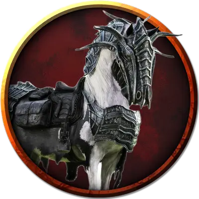

Пепельный боевой конь
Ashen Warhorse
Большой Элементаль, законно-злой

Класс Доспеха 11
Хиты 19 (3к10 + 3)
Скорость 60 футов
| мод | спас | ||
|---|---|---|---|
| СИЛ | 18 | +4 | +4 |
| ЛОВ | 12 | +1 | +1 |
| ТЕЛ | 13 | +1 | +1 |
| мод | спас | ||
|---|---|---|---|
| ИНТ | 2 | −4 | −4 |
| МДР | 12 | +1 | +1 |
| ХАР | 7 | −2 | −2 |
Иммунитет к урону огонь
Чувства пассивное Восприятие 11
Опасность 1/2 (100 опыта)
Бонус мастерства +2
Особенности
Пепельное существо. Когда хиты коня уменьшаются до 0, он превращается в груду пепла, а все снаряжение, которое он нёс или носил, падает на землю.
Растаптывающий рывок. Если конь переместится как минимум на 20 футов по прямой к существу, а затем в том же ходу попадёт по нему атакой копытами, эта цель должна преуспеть в спасброске Силы Сл 14, иначе будет сбита с ног. Если цель сбита с ног, конь может бонусным действием совершить по ней ещё одну атаку Копытами.
Действия
Копыта. . Рукопашная атака оружием: +6 к попаданию, досягаемость 5 фт., одна цель. Попадание: 11 (2к6 + 4) дробящего урона.